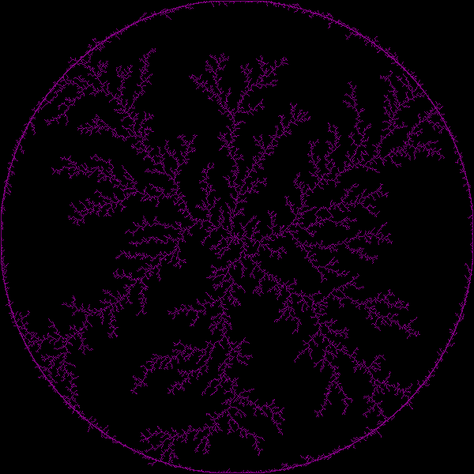

ForeGround Color:
Background Color:
Walking Color:
Points:
Max Steps:
Problems Encountered
The first problem I encountered was simple character compatibility issues. When I started this program, the only machine I had access to was my father's macbook.
It took several minutes just to access a plain text editor to work on the code, and then it turned out to be not so plain text. Special quotes and dashes replaced plain ascii,
preventing my program from running. It was obviously a simple fix once I had a decent development platform again, but it was time consuming.
I then had problems getting my random points to connect to the central seed. The first problem was that I forgot to plant the seed, but problems persisted once that was fixed.
I moved the code for making connections into a seperate function to aid diognostics, and began coloring the points the particles walked through, just to get agood idea of what the problem was.
In the end, I had to remove some of the design space I wanted (being able to make connections more than 1 pixel away) in order to fix it.
The last major problem I had is sadly foolish. I wrote the distance formula as
√ (x-xc)2 - (y-yc)2
when it should have been
√ (x-xc)2 + (y-yc)2.
I discovered this when I noticed that the radius was expanding too quickly, so most particles were unable to get close enought to the figure to connect.
I feel that I probably fixed many latent bugs in the process of looking for this one.
Interesting Techniques Employed
Instead of comparing the square root of (x-xc)2 + (y-yc)2 and the radius, I removed the square root and squared the radius instead,
since I didn't care about the actual distance. This was because finding the square root is far more expensive than simple multiplication,
and since I performed this measurement every time a particle connected to the figure, I hoped optimizing the equation would lead to a significant improvement.
Sources of Information
I used the description of the DLA algorithm on mirkwood and on wikipedia in examing how this could be accomplished.
Several snippets of html came from the web, particularly the examples on mirkwood, but all of the javascript is original.
Collaborators
Surprisingly, I worked alone on this project. Even listening on others' conversations, I did not pick up any advice.
Notes on Additions
In order to get a better idea of where particles were spawning and walking, I gave them a seperate color.
By default, both walking and background colors are the same, but they can be changed.
This aided greatly in testing.
Screenshots of Interesting Results
A Purple on Black DLA of 999,999 points walking 999,999 steps.

The html page now limits both number of points and max steps to 99,999, which yields similar results.
An image from testing, using seperate BG(cyan), walk(white), and DLA figure(black) colors.